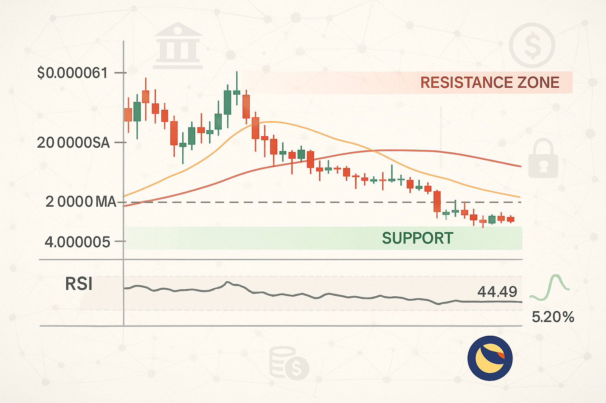

Terra Classic Price Prediction for End of 2025: In-Depth Analysis and Insights
The information in this article is provided for educational purposes only and is not investment advice. Cryptocurrency investments carry risks.
Introduction
As of August 20, 2025, 01:17 AM EEST, Terra Classic (LUNC) is trading at approximately $0.000061, serving as the native token of the original Terra blockchain, now known as Terra Classic, following its 2022 collapse and split into Terra Classic and Terra 2.0 (LUNA). Despite its turbulent history, Terra Classic continues to support decentralized finance (DeFi) applications and stablecoins, with ongoing community efforts to revive the ecosystem through token burns and upgrades. This article provides a comprehensive analysis of LUNC’s price outlook for the end of 2025, exploring bullish and bearish scenarios, key growth drivers, and potential risks based on current market trends and ecosystem developments.

Current Situation
As of August 20, 2025, Terra Classic’s price stands at around $0.000061, reflecting a modest 1.84% increase from the previous week, when LUNC traded at $0.000058. Over the past 30 days, LUNC has experienced 47% green days with a price volatility of 5.2%, indicating moderate market activity. The Fear and Greed Index at 73 suggests a greedy market sentiment, driven by community-driven initiatives like token burns and recent upgrades such as v3.5.0, launched on August 15, 2025. Over the past year, LUNC’s price has decreased by 10.3%, trading at $0.000068 in August 2024. Since its all-time high of $119.18 in April 2022, LUNC has faced significant challenges due to the UST stablecoin collapse, which eroded investor trust.
Price Predictions for End of 2025
Analyst forecasts for Terra Classic by December 2025 vary widely due to its volatile history and ongoing recovery efforts. Below are the key projections:
- Bearish Scenario: Some analysts predict a decline to $0.00002372–$0.0000452, particularly if a projected 30–40% market correction occurs in early 2025 or if ecosystem developments fail to restore confidence.
- Moderate Scenario: Projections suggest LUNC could stabilize between $0.000061 and $0.00011091, supported by steady token burns and community efforts to enhance utility.
- Bullish Scenario: Optimistic forecasts estimate LUNC reaching $0.00018375–$0.000675, driven by successful upgrades, increased DeFi adoption, and a potential market rally between February and April 2025. Some highly speculative predictions even suggest a peak of $0.5229, though this is considered unlikely due to the high circulating supply of over 5.5 trillion tokens.
Most analysts agree that reaching $1 is highly improbable, requiring an unrealistic 1,600,000% increase due to LUNC’s massive circulating supply, which would result in a market cap exceeding the entire crypto market.
Factors Driving Price Growth
- Token Burn Program: Ongoing efforts to reduce LUNC’s hyperinflated supply through transaction fee burns and community initiatives could enhance scarcity and value.
- Ecosystem Upgrades: Recent upgrades like v3.5.0, launched on August 15, 2025, aim to improve network efficiency and integration with Cosmos, potentially boosting adoption.
- Community Support: A dedicated community drives proposals, such as tiered undelegation periods to accelerate burns, fostering optimism and engagement.
- Market Rally: A projected cryptocurrency market surge in 2025, particularly from February to April, could create a favorable environment for LUNC’s price growth.
- Stablecoin Initiatives: Efforts to re-peg stablecoins like USTC and introduce assets like the Selenium Protocol’s “GOLD” could enhance LUNC’s utility.
Risks and Downward Factors
- Market Volatility: A projected 30–40% market correction in early 2025 could exert significant downward pressure on LUNC’s price, impacting investor sentiment.
- Historical Baggage: The 2022 UST collapse, which led to $40 billion in losses, continues to undermine investor trust, making recovery challenging.
- Regulatory Risks: Stricter global regulations, such as the GENIUS Act banning unbacked stablecoins, could limit Terra Classic’s accessibility and adoption.
- High Circulating Supply: With over 5.5 trillion tokens, significant price increases are constrained without substantial burns.
- Competition: Intense competition from other layer-1 blockchains, such as Ethereum and Solana, could challenge Terra Classic’s market share.
Volatility Analysis
From July to August 2025, Terra Classic’s price rose from $0.000055 to $0.000061, marking an 11% gain with a volatility of 5.2%, indicating relative stability compared to its historical volatility. Technical indicators, such as the Relative Strength Index (RSI) at 44.49 and a bearish Moving Average Convergence Divergence (MACD), suggest weak momentum and consolidation around $0.00005–$0.00006. A projected market recovery from February to April 2025 could support price growth, particularly if token burns and upgrades gain traction. However, LUNC’s high circulating supply and historical challenges limit significant upside without major ecosystem breakthroughs.
Conclusion
By the end of 2025, Terra Classic’s price is projected to range between $0.00006 and $0.00018, with the potential to reach $0.000675 in an optimistic scenario driven by token burns, ecosystem upgrades, and a bullish market. However, the likelihood of reaching $1 or higher is extremely low due to the massive circulating supply and historical trust issues. Investors should remain cautious of market volatility, regulatory risks, and competition. Thorough research and risk management are essential before investing in Terra Classic.